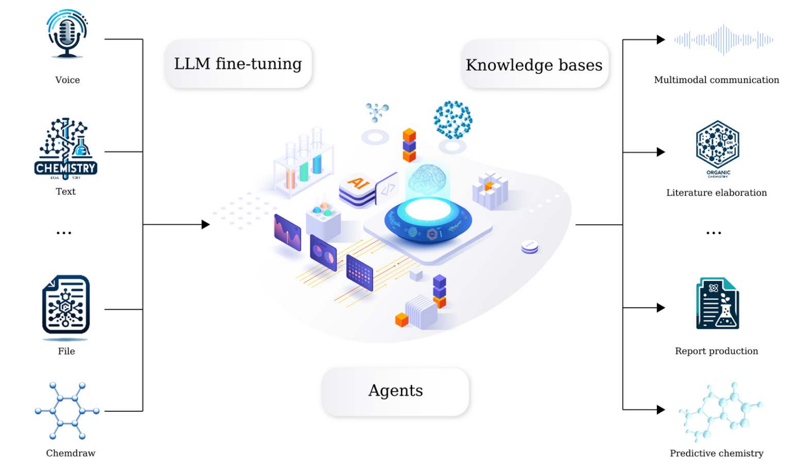
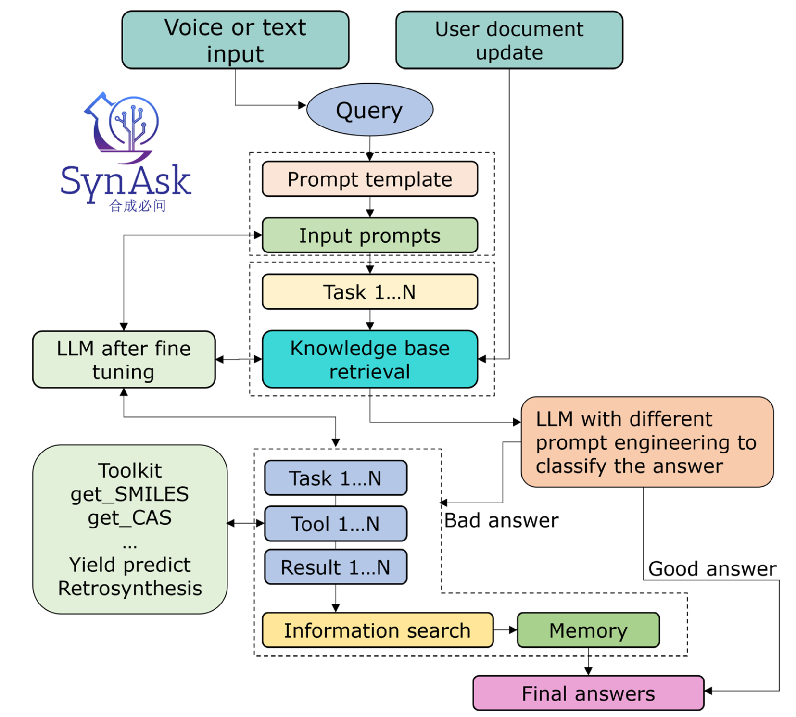
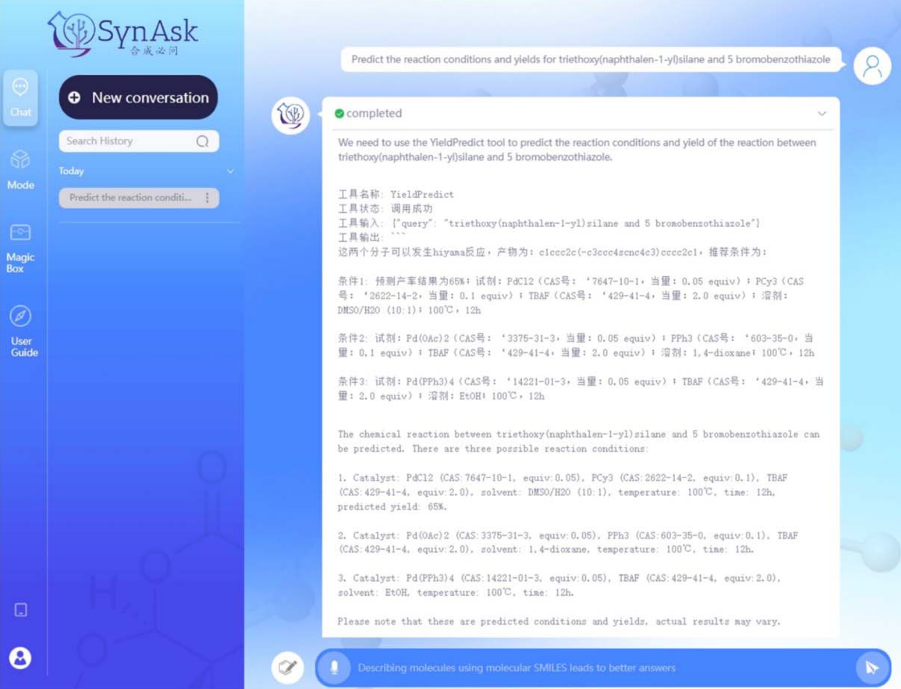
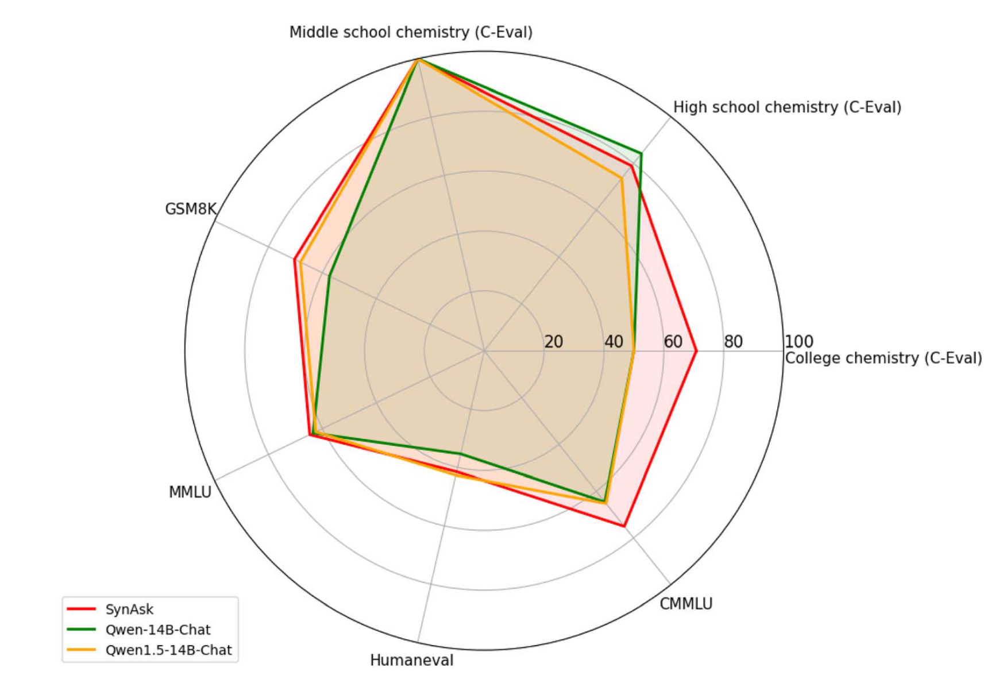
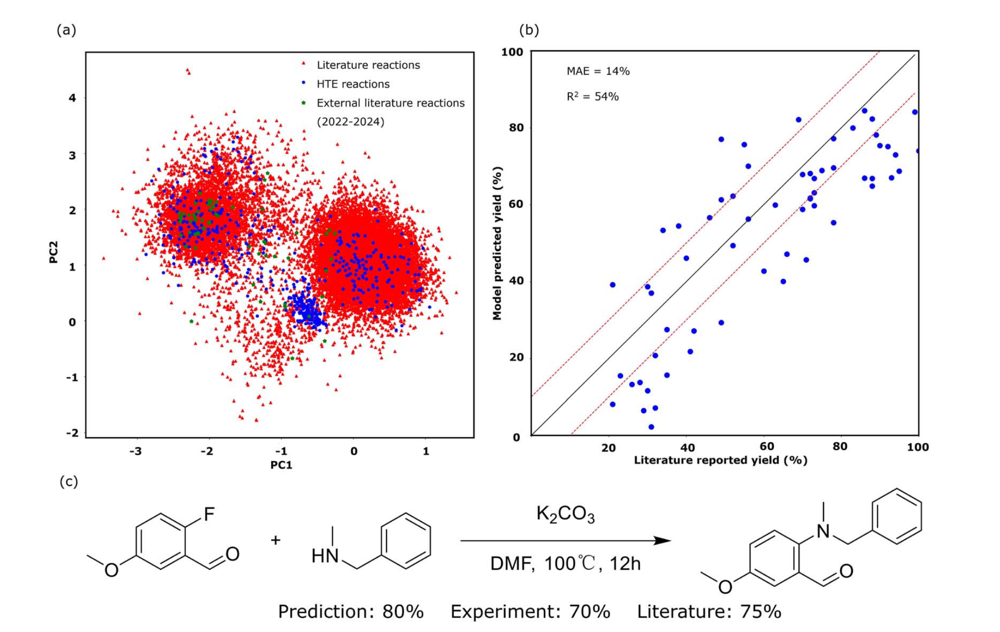
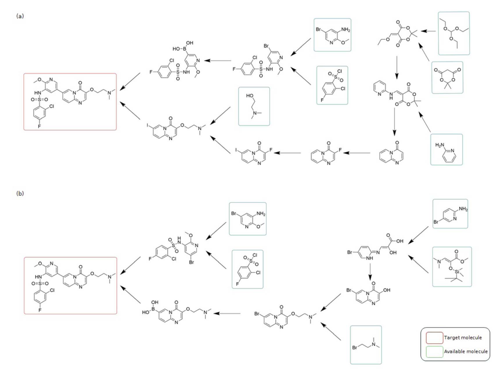
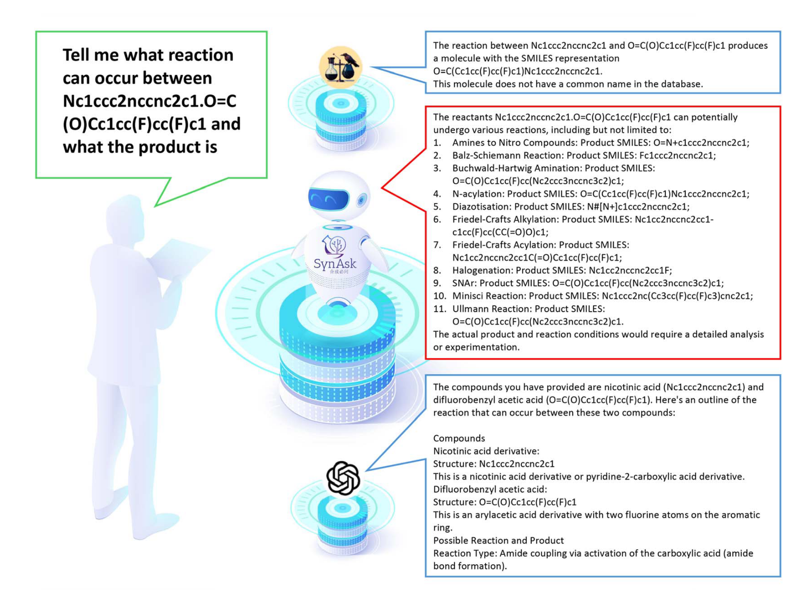

一、研究背景与核心贡献
随着大语言模型（LLMs）在通用领域的突破，其在垂直领域的专业化应用成为研究热点。然而，有机化学领域因分子结构复杂、实验数据稀疏等特点，传统LLMs在生成式任务（如逆合成路径规划）中表现有限。本文提出的SynAsk 平台，通过“领域数据微调+工具链集成”的双轨策略，首次实现了面向有机合成的专业化LLM架构，具有以下突破性贡献：
- 领域适应性优化：通过两阶段微调（监督学习强化化学认知、指令学习提升工具调用能力），使模型从通用LLM转型为“化学专家” 。
- 工具链协同框架：基于LangChain框架整合12种内部工具（如分子检索、产率预测）与10种外部工具（如文献获取），形成动态响应系统，解决了传统LLMs在化学任务中“知识静态化”的痛点 。
- 动态学习机制：支持实时知识库更新与增量学习，确保模型随化学领域进展持续迭代，避免因数据滞后导致的预测偏差 。
二、方法论创新解析
1. 基础模型选择与微调策略
- 模型选型：选择Qwen-14B作为基础模型，因其在化学相关评估指标（如C-Eval中的大学化学得分）优于同类开源模型，且支持灵活的架构切换 。
- 两阶段微调：
- 监督微调：通过化学对话数据强化模型的领域认知，使其能理解SMILES符号、CAS编号等专业标识。
- 指令微调：引入思维链（Chain-of-Thought）机制，训练模型将用户查询分解为工具调用序列（如先检索分子信息，再预测反应路径），提升任务推理的连贯性 。
2. 工具链整合与工作流设计
SynAsk通过模块化工具集覆盖有机合成全流程：

- 分子层级：支持SMILES与化学名称互转、分子相似性计算等功能，例如通过
GetSMILES工具快速解析用户输入 。 - 反应层级：集成产率预测模型（如YieldPredict）与逆合成工具（如Retrosynthesis），后者采用强化学习算法规划合成路径，成功率为传统工具AIZynthFinder的两倍（55% vs. 27%）。
- 知识扩展：通过文献检索工具（如
GetLiterature）实时获取最新研究成果，弥补模型训练数据的时效性局限 。

👆 SynAsk平台的工作流程：从输入到最终答案。
3. 伦理与风险管理
为防止滥用，SynAsk内置双重防护机制：
- 实时监测：利用NLP技术识别敏感查询（如违禁药物合成），触发警告并限制响应。
- 数据过滤：在预训练与微调阶段剔除高风险内容，确保工具集与知识库符合科研伦理 。
三、性能评估与案例验证

1. 通用能力提升
在OpenCompass评估中，SynAsk的化学专项能力显著超越基础模型Qwen-14B：
- 大学化学得分：70.83% vs. 50%，体现其对复杂化学问题的解析能力。
- 多模态整合：CMMLU得分75.03%，显示其在跨模态任务（如文本-结构式关联）中的优势 。

👆 从七个方面比较了SynAsk和Qwen的综合能力，包括它们在化学中的应用
2. 合成化学任务表现
- 产率预测：对亲核芳香取代（SNAr）反应的外部文献数据预测误差（MAE=14.1%）接近实验水平，助力化学家优化反应条件。

- 逆合成规划：针对ChEMBL数据库中的小分子药物，SynAsk成功生成55%的合成路径，显著优于传统工具，且路径与人类专家方案高度吻合。

👆 目标分子Gilmelisib的合成路线比较：由（a）SynAsk的逆转录合成工具和（b）一位经验丰富的合成化学家策划。
3. 对比实验
与ChatGPT-4和ChemCrow相比，SynAsk在专业任务中展现独特优势：
- 多路径生成：面对复杂底物（如喹喔啉胺与二氟苯乙酸），SynAsk可提出N-酰化、Buchwald-Hartwig胺化等多元反应方案，而其他模型仅能输出单一结果。
- 结构识别精度：ChatGPT-4易混淆分子结构（如将喹喔啉胺误认为烟酸衍生物），而SynAsk凭借领域微调规避此类错误 。

👆 SynAsk、ChatGPT-4和ChemCrow在专业综合问题上的输出比较。
四、局限性与未来方向
1. 当前局限
- 覆盖范围：主要聚焦药物化学常见反应，对非常规反应（如光催化反应）支持有限。
- 多语言支持：仅优化中英文，其他科研语言（如德语、日语）功能较弱 。
2. 未来展望
- 自主实验室驱动：结合机器人化学家硬件，实现“AI设计-实验验证”闭环（参考RoboDK虚拟助手在机器人编程中的整合案例）。
- 跨领域扩展：将架构迁移至无机化学、材料科学等领域，需补充相应工具与数据 。
五、学术价值与行业意义
SynAsk的提出标志着LLMs在垂直领域的应用从“通用辅助”迈向“专业协同”。其方法论（微调+工具链）为其他学科（如生物医学、材料工程）的LLM定制化提供了范式。此外，动态学习机制与伦理框架的设计，为AI在科研中的合规应用树立了标杆。随着后续与自动化实验平台的深度融合，SynAsk有望成为推动化学研究范式变革的核心引擎。